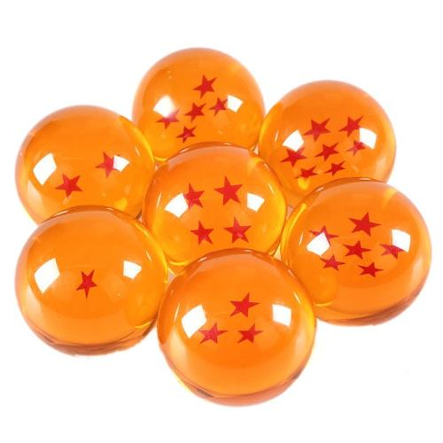
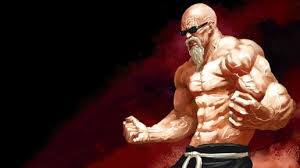
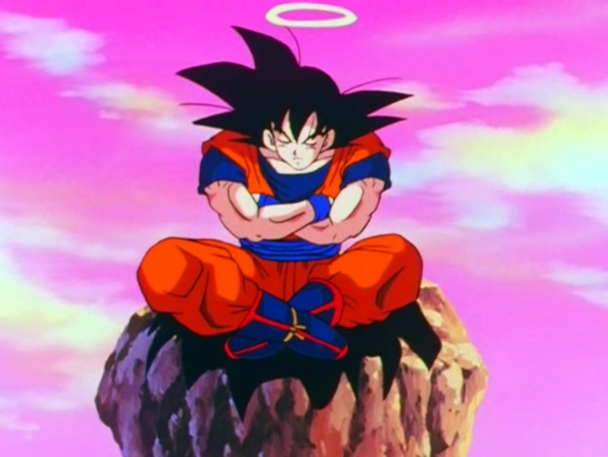
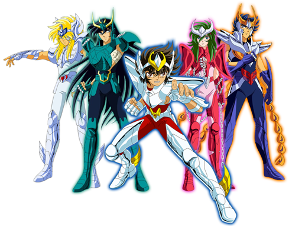

PROJETOS
Coordenador da 37ª busca comunitária pelas Esferas do Dragão
Coordenador da “Maratona Corpo do Verão na Câmara de Gravidade da Bulma – Tanquinho definido com sete dias de Nível 12”

Professor do curso “Estado Vegeta Ativo: mantendo o pique na terceira idade”
Autor do livro “Técnicas de Meditação e Respiração: Nem toda energia acumulada precisa virar um Kamehamehá”
Criador do grupo de apoio “Somos Saia Jeans”, em defesa da comunidade LGBT de lutadores, androids e extraterrestres.

Criador do minicurso de controle de raiva “Cortando o mal pela cauda: Controlando o Gorila Interior”

Participação especial no Seminário Saint Seya de Reincarnações Múltiplas, ministrando os cursos “Teletransporte: Um atalho no Caminho da Serpente” e “Lá e de volta: soluções para o estresse pós-traumático”
Garoto Propaganda da Avon, para a linha de produtos “Blondie Blast: loiros brilhantes para noites brilhantes”

Fundação da Igreja Internacional do Reino de Goku